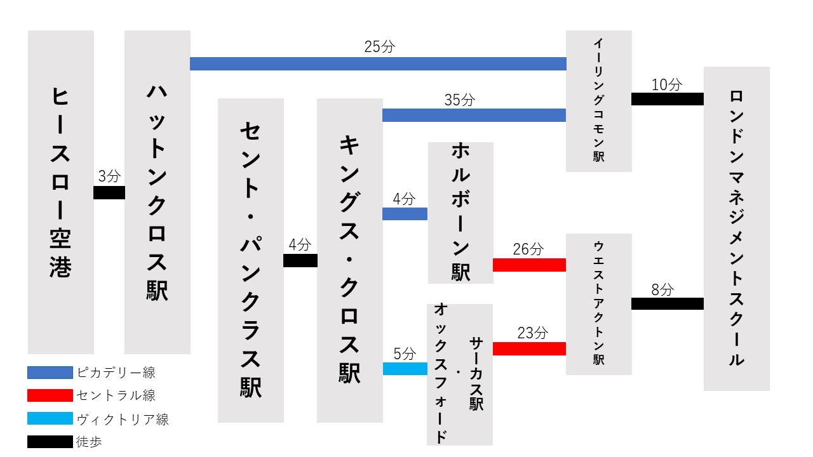

アクセス
交通機関でお越しの方へ
ロンドン西部イーリング・ロンドン特別区であるアクトン(Acton)に位置
ロンドン中心部からおよそ45分の場所に立地
この地域は治安が非常によく、日本人も多数住んでいます
ロンドン中心地から
セント・パンクラス駅(St. Pancras)から徒歩4分キングス・クロス駅(King's Cross)より ピカデリー線(Piccadilly Line)でイーリングコモン駅(Ealing Common)までセント・パンクラス駅(St. Pancras)から徒歩4分キングス・クロス駅(King's Cross)より ピカデリー線(Piccadilly Line)でホルボーン駅(Holborn)まで
セントラル線(Central Line)に乗り換えウエストアクトン駅(West Acton)までセント・パンクラス駅(St. Pancras)から徒歩4分キングス・クロス駅(King's Cross)より ヴィクトリア線(Victoria Line)でオックスフォード・サーカス駅(Oxford Circus)まで
セントラル線(Central Line)に乗り換えウエストアクトン駅(West Acton)まで
空港から
ヒースロー空港から徒歩3分ハットンクロス駅(Hatton Cross)より ピカデリー線(Piccadilly Line)でイーリングコモン駅(Ealing Common)まで
